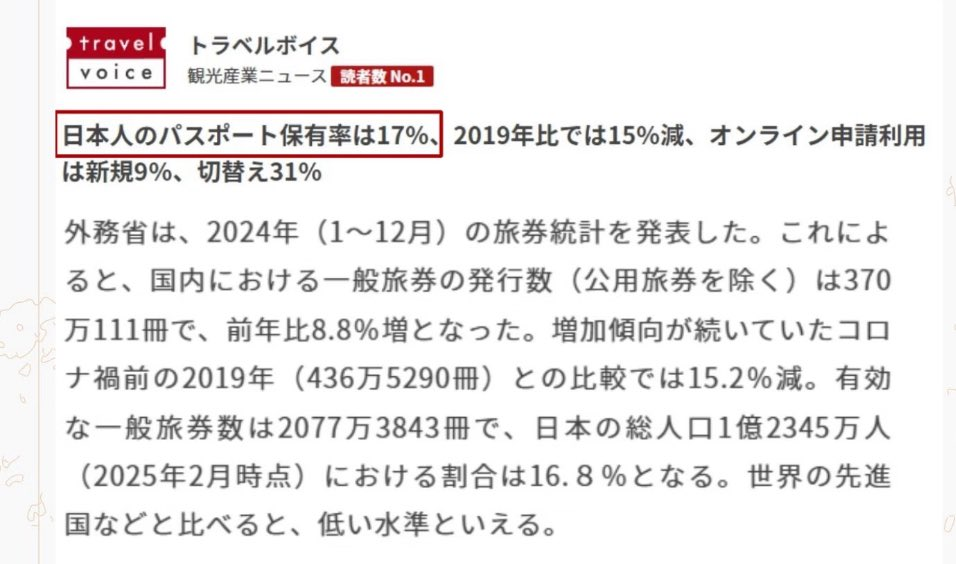

サイバー環状線
@CyberKanjousen
@erchenlu1 @grok 你觉得呢

卢尔辰
@erchenlu1
日本护照免签世界190个国家，基本上全世界随便去。
但日本护照持有率才17%，大约6个日本人里面，只有1个人申请并持有护照。
本质上原因是
1. 工资停滞多年，日元汇率狂跌，出国后购买力不断缩水
2. 其他国家旅游服务业都比日本差，在国外相同的价钱只能买到更差的服务和体验。 https://t.co/NfFNr2TXL6